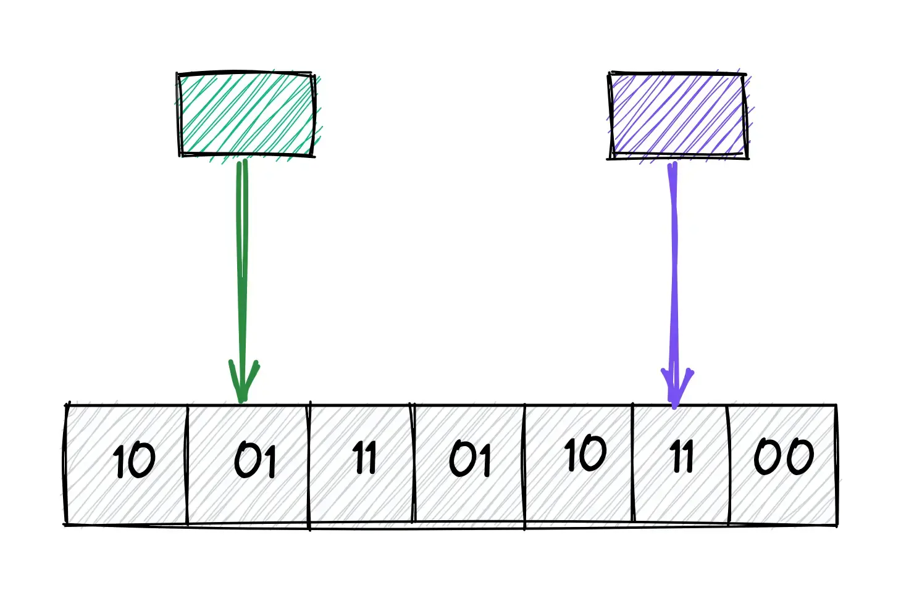
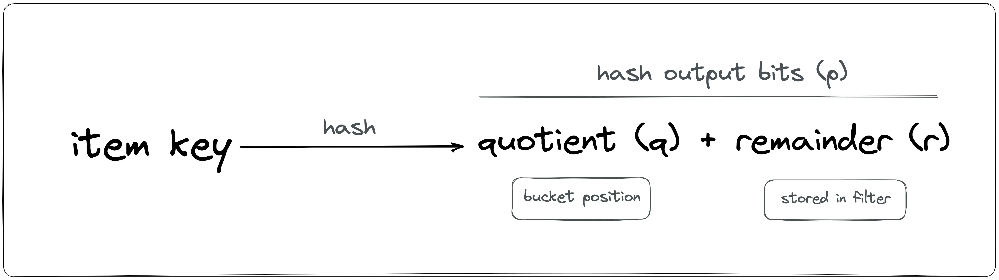
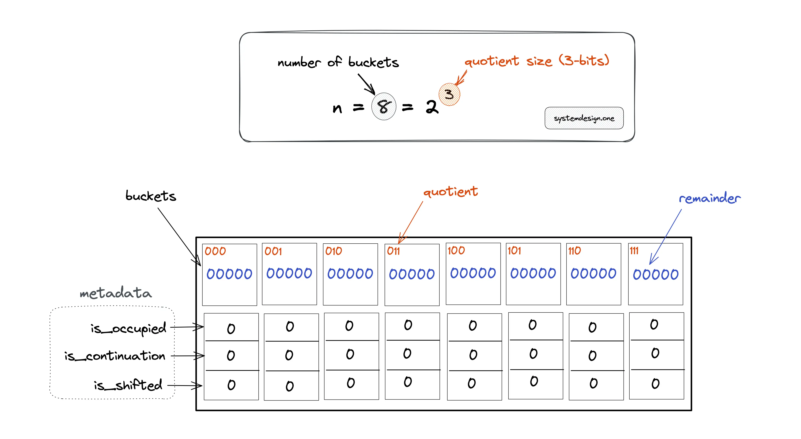
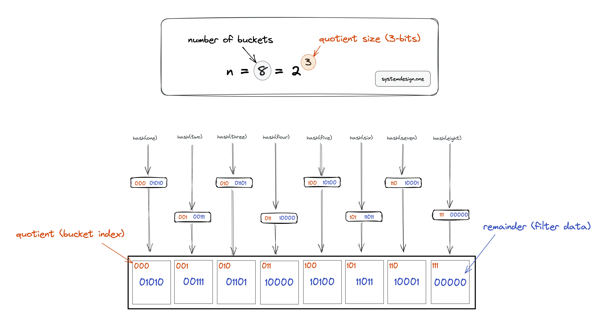
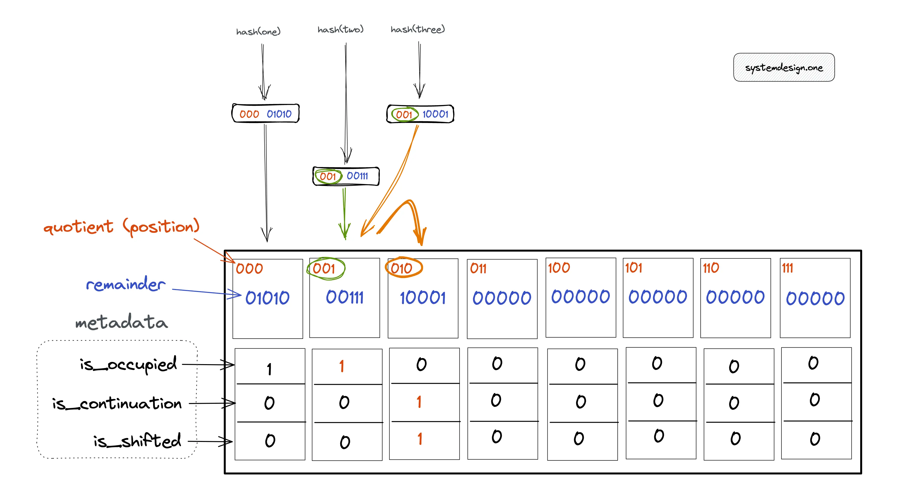
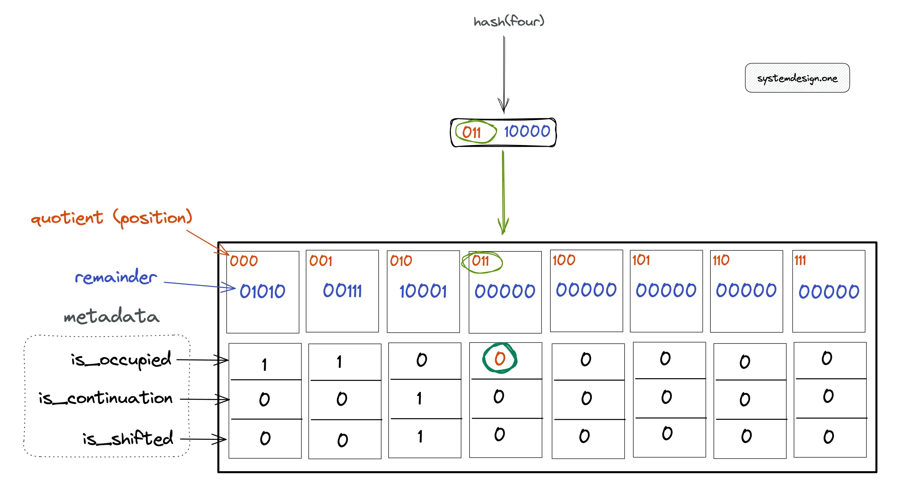
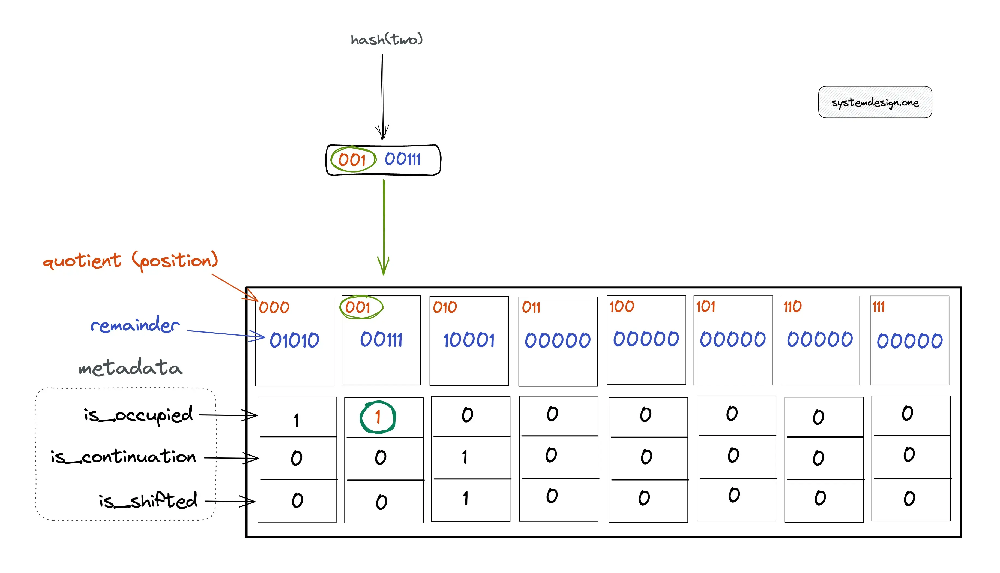
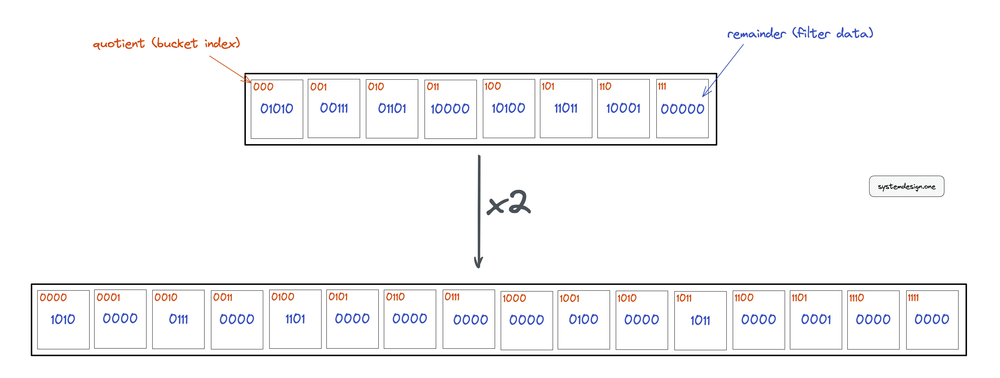
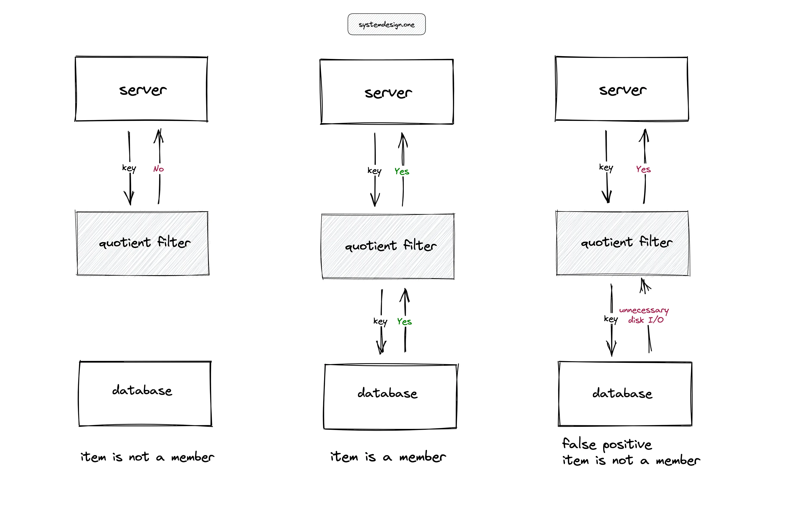

Quotient Filter Explained
Probabilistic Data Structure To Check Membership

The target audience for this article falls into the following roles:
- Tech workers
- Students
- Engineering managers
The prerequisite to reading this article is fundamental knowledge of data structures and algorithms. This article does not cover an in-depth guide on probabilistic data structures.
Download my system design playbook for free on newsletter signup:
Introduction
Data structures such as HashSet can be used in a small data set to test if an item is a member of the data set. However, the operation to test if an item is a member of a large dataset can be expensive. The time complexity and space complexity can be linear in the worst case.
Probabilistic data structures offer constant time complexity and constant space complexity at the expense of providing a probabilistic answer.
Requirements
Design a data structure with the following characteristics:
- constant time complexity to test membership of items in a large dataset
- constant space complexity to test membership of items in a large dataset
- test membership may yield approximate results
- items can be deleted
- the data structure can be resized
What is a quotient filter?
A quotient filter is a space-efficient probabilistic data structure that is used to test whether an item is a member of a set. The quotient filter will always say yes if an item is a set member. However, the quotient filter might still say yes although an item is not a member of the set (false positive). The quotient filter stores only a part of the item’s hash fingerprint along with additional metadata bits. The quotient filter can be resized on demand. The quotient filter supports the following operations:
- adding an item to the set
- test the membership of an item in the set
- deletion of an item from the set
How does a quotient filter work?
The quotient filter data structure is a bit array of length n with additional metadata bits. The hash function generates a p-bits fingerprint as shown in Figure 1. The r least significant bits are called the remainder while the q = p - r most significant bits are called the quotient. The quotient filter has n = 2^q buckets.

Assume the hash function output is 8-bits long. In Figure 2, the bucket position is indicated by the quotient bits (0–7) in binary number format. All the bits in the quotient filter are set to zero on initialization (an empty quotient filter). The quotient filter utilizes only a hash function such as MurmurHash, unlike the k-hash functions in the bloom filter.

The hash output is split into two parts: quotient and remainder. The quotient filter does not store the item but only a part of the generated hash output. The quotient is used to identify the bucket position while the remainder gets stored in the bucket. For instance, if the output of the hash function is 8 bits (p), and the quotient filter size is eight, a power of two, n = 2^q = 2^3. The quotient (q) is the most significant bits (q = 3) and the remainder (r) is p - q = 8 - 3 = 5 bits.
The original bucket to which the quotient of the hash output points is known as the canonical bucket. The set of fingerprints having the same quotient is known as run. The additional metadata bits in the quotient filter perform the following function:
- is_occupied: set when a bucket is a canonical bucket for some item
- is_continuation: set when a bucket is occupied but not by the first remainder in a run
- is_shifted: set when the remainder in a bucket is not in its canonical bucket
How to add an item to the quotient filter?
In Figure 3, the hash output is 8 bits (p). The size of the quotient filter is 8 (n) yielding a quotient (q) of 3 bits and the remainder (r) of 5 bits. The following operations are executed to add an item to the quotient filter:
- the item is hashed through a hash function
- the quotient (q) and the remainder (r) are calculated
- the quotient is used to identify the bucket position
- the remainder is stored in the corresponding bucket

In Figure 3, item one is added to the quotient filter. The bucket that should store the fingerprint for item one is identified by the quotient in the hash output.
The binary number 000 (quotient) represents the zeroth bucket. The remainder 01010 is stored in the zeroth bucket.
Hard collisions occur in the quotient filter when multiple items result in the same hash output. The hash function output must be uniformly distributed and independent to prevent hard collisions.
Soft collisions occur in the quotient filter when multiple items have the same quotient. The metadata bits are used in the quotient filter due to the following reasons:
- resolve soft collisions in the quotient filter
- enable recovery of the original hash output
In Figure 4, item one is added to the quotient filter. The bucket that should store the fingerprint for item one is identified by the quotient of the hash output. The following operations are executed to add item one to the quotient filter:
- calculate hash(one) = 00001010 = 000 (quotient) | 01010 (remainder)
- 000 (quotient) is used to identify the bucket position
- 01010 (remainder) is stored in the bucket
- set metadata bit is_occupied to 1 as the item one hashed into the bucket

However, items two and three have the same quotient resulting in a soft collision. The following operations are executed to add item two to the quotient filter:
- calculate hash(two) = 00100111 = 001 (quotient) | 00111 (remainder)
- 001 (quotient) is used to identify the bucket position
- 00111 (remainder) is stored in the bucket
- set metadata bit is_occupied to 1 as item two hashed into the bucket
The following operations are executed to add item three to the quotient filter:
- calculate hash(three) = 00110001 = 001 (quotient) | 10001 (remainder)
- 001 (quotient) is used to identify the bucket position
- bucket at position 001 is already taken because the is_occupied metadata bit is set to 1
- linear probing is performed to identify the subsequent (on the right) empty bucket at position 010
- 10001 (remainder) is stored in the bucket at position 010
- metadata bit is_occupied is unset as the bucket at position 010 is not the canonical bucket of item three
- metadata bit is_continuation is set to 1 as item two also hashed into the same bucket as item three
- metadata bit is_shifted is set to 1 as item three is not stored in the original bucket at position 001
Further system design learning resources
Download my system design playbook for free on newsletter signup:
How to check the membership of an item in the quotient filter?
The following operations are executed to check if item four is a member of the quotient filter:
- item four is hashed through the same hash function
- calculate hash(four) = 01100000 = 011 (quotient) | 00000 (remainder)
- verify if the metadata bit is_occupied at the bucket position 011 (quotient) is set

In Figure 5, the metadata bit is_occupied is unset, which shows that item four is not a member of the quotient filter. The following operations are executed to test if item two is a member of the filter:
- item two is hashed through the same hash function
- calculate hash(two) = 00100111 = 001 (quotient) | 00111 (remainder)
- verify if the metadata bit is_occupied at the bucket position 001 is set

In Figure 6, the metadata bit is_occupied is set to 1, which shows that item two might be a member of the quotient filter. The uncertainty about the membership of an item is due to the possibility of hard collisions on the hash function output. In case, the is_occupied bit is unset but the other metadata bits are set on the corresponding bucket, perform a linear probing operation to test the membership of an item.
Quotient filter false positive
The probability of a false positive can be reduced by increasing the storage size of the quotient filter. The probability of false positives increases when the load factor (the number of occupied buckets) increases.
How to resize the quotient filter?

The most significant bit from the remainder is moved to the least significant bit position of the quotient to double the size of the quotient filter.
What is the asymptotic complexity of the quotient filter?
The performance of the quotient filter depends on the hash function used. The faster the computation of the hash function, the quicker the overall time of each operation on the quotient filter.
Time complexity
The quotient filter offers a constant time complexity of O(1) on average for most operations. However, in the worst case, all operations might take logarithmic time complexity O(log(n)), where n is the count of buckets in the quotient filter.
Space complexity
The quotient filter does not store the data items but a part of the fingerprint yielding a constant space complexity of O(1).
Advantages of quotient filter
The benefits of the quotient filter are the following:
- items can be deleted
- quotient filter can be resized without rehashing data
- disk-based data structure due to sequential disk access pattern
- constant time complexity
- constant space complexity
- no false negatives
Quotient filter disadvantages
The limitations of the bloom filter are the following:
- quotient filters consume around 20% more space than bloom filters due to metadata bits
- false positives rate can’t be reduced to zero
- quotient filter is relatively complex to implement
Quotient filter use cases

The quotient filters are useful in high-ingestion systems to prevent expensive disk lookups. In Figure 8, for instance, the server performing a lookup of an item in a large table on the disk can degrade the throughput of the service. The quotient filter can be used to serve the lookups and reduce the unnecessary disk I/O on the database server except when the quotient filter returns a false positive. The applications of the quotient filter are the following:
- reducing disk lookups for the non-existing keys in a database
- Log-structured merge tree (LSM) storage engine used in search engines such as ElasticSearch uses the quotient filter to check if the key exists in the SSTable
Quotient filter implementation
The C language implementation of a quotient filter for academic purposes can be found on GitHub.com/vedantk. In practice, a hash function with 64-bit (p) output can be used to generate a quotient filter, which can hold around 1 billion items. The quotient takes the majority of the hash output bits on partitioning.
Variants of quotient filter
There are more data structures that offer similar functionality as the quotient filter. The popular variants of the quotient filter are the following:
Summary
The quotient filters are a useful probabilistic data structure in high-ingestion systems. The quotient filter offers constant time complexity and constant space complexity. The tradeoff is the quotient filter yielding a probabilistic result and consuming relatively more space than the bloom filter.
What to learn next?
Download my system design playbook for free on newsletter signup:
License
CC BY-NC-ND 4.0: This license allows reusers to copy and distribute the content in this article in any medium or format in unadapted form only, for noncommercial purposes, and only so long as attribution is given to the creator. The original article must be backlinked.
References
- Burton H. Bloom, Space/Time Trade-offs in Hash Coding with Allowable Errors (1970), uta.edu
- Michael A. Bender et al., Don’t Thrash: How to Cache Your Hash on Flash (2011), arxiv.org
- Sourav Dutta et al., Streaming Quotient Filter: A Near Optimal Approximate Duplicate Detection Approach for Data Streams (2013), , dl.acm.org
- Dr. Andrii Gakhov, quotient filters, gakhov.com
- C. Titus Brown et al., MQF and buffered MQF: quotient filters for efficient storage of k-mers with their counts and metadata (2021), bmcbioinformatics.biomedcentral.com
- Adrian Colyer, A general purpose counting filter: making every bit count (2017), blog.acolyer.org
- Afton Geil, Quotient Filters: Approximate Membership Queries on the GPU (2016), semanticscholar.org
- Vedant Kumar, quotient-filter (2014), GitHub.com
- Quotient filter, wikipedia.org